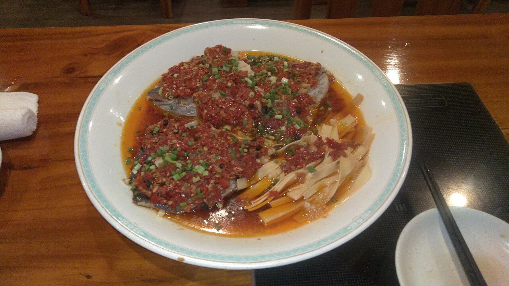
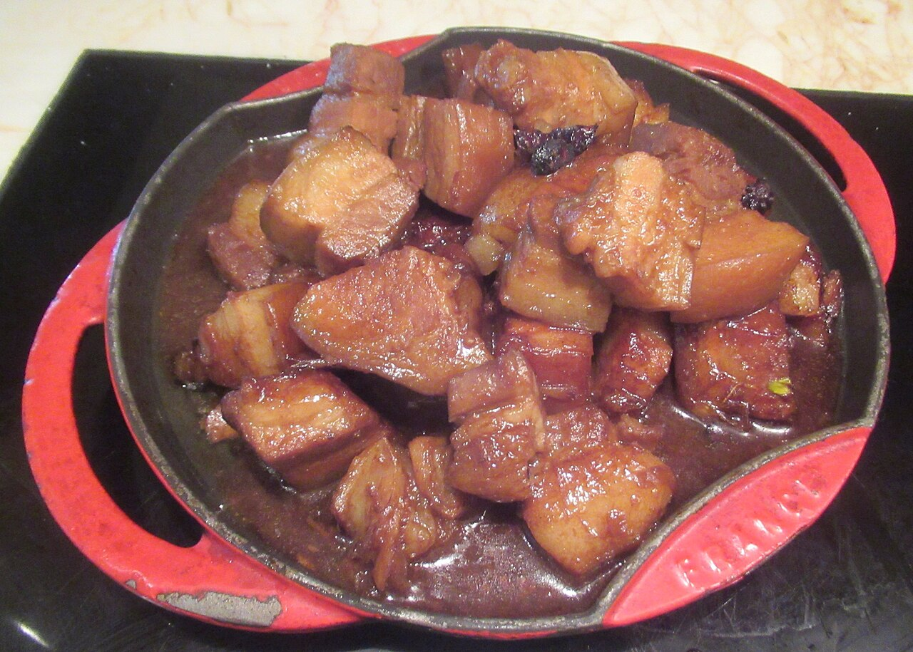
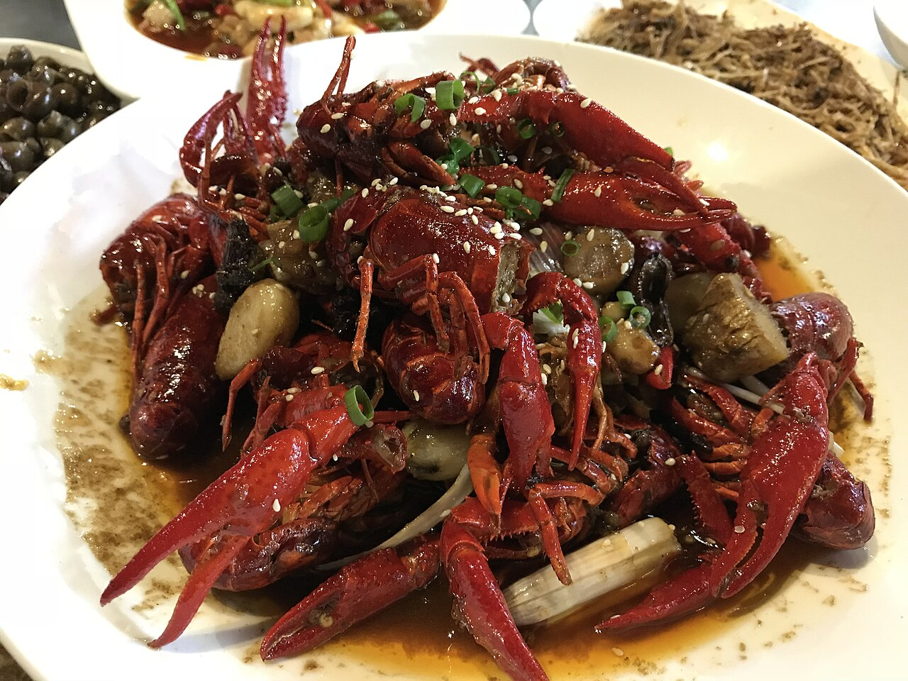
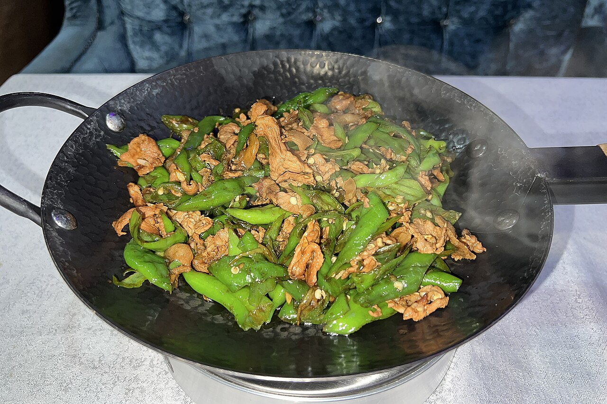

剁椒鱼头Steamed Fish Head with Chili
湘菜头牌:鳙鱼头劈开,铺满剁椒与姜蒜,旺火清蒸,鱼头鲜嫩、剁椒酸辣, 汤汁拌面拌饭皆是一绝,因鱼头对开形似"鸿运当头",宴席必备。

湘菜发祥于湖南,以长沙为中心,口味讲究"香辣、酸辣、鲜辣",重油重色重火功。 剁椒、腊味、豆豉与擂辣椒是湘菜厨房的看家味道;蒸菜、小炒与腊味合蒸 更是别具一格,近年更以"湘味小炒"风靡全国。

湘菜头牌:鳙鱼头劈开,铺满剁椒与姜蒜,旺火清蒸,鱼头鲜嫩、剁椒酸辣, 汤汁拌面拌饭皆是一绝,因鱼头对开形似"鸿运当头",宴席必备。

与主席家乡湘潭渊源颇深的名菜:不用酱油上色,而以糖色与辣椒、豆豉同烧, 成菜红亮如琥珀,肥而不腻、辣中回甜,是湘式红烧肉的代表。

长沙夜宵的灵魂:小龙虾与紫苏、干椒、蒜蓉猛火同炒再焖,麻、辣、鲜、香齐发。 夏夜街边,一盆口味虾配冰啤酒,是湖南人最惬意的烟火日常。

湖南人的"米饭杀手":五花肉煸出油,与螺丝椒、豆豉大火同炒, 辣椒起虎皮、肉片焦香,香辣咸鲜一盘下三碗饭。

长沙街头传奇"臭干子":豆腐入卤水发酵后现炸,外焦里嫩、 闻臭吃香,灌入蒜汁辣酱,是火宫殿扬名的名小吃。